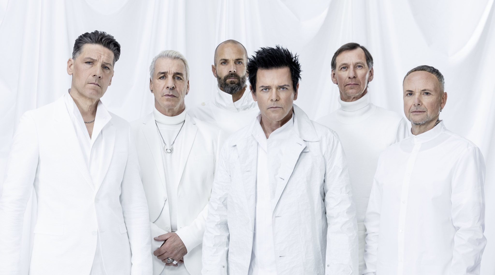
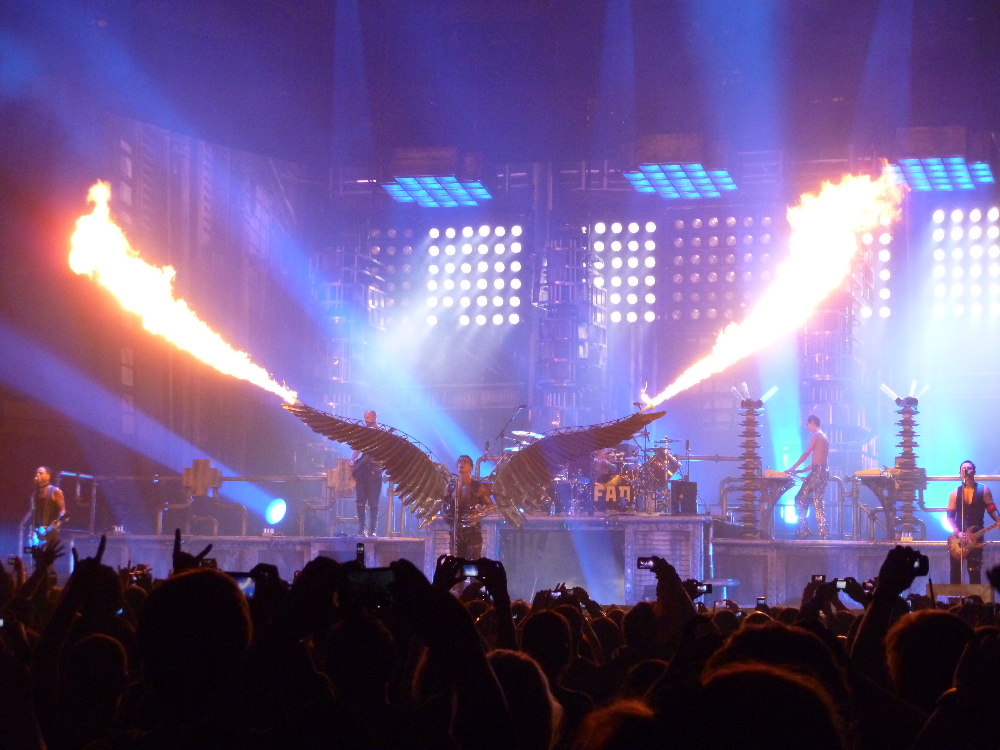

Про гурт
Rammstein — німецький індастріал-метал гурт, заснований у 1994 році в Берліні. Гурт став всесвітньо відомим завдяки важкому звучанню, потужним концертам та унікальному стилю.
Майже всі пісні гурту виконуються німецькою мовою, що стало однією з головних особливостей Rammstein.
Гурт був створений після перемоги на музичному конкурсі в Німеччині. Перший альбом Herzeleid вийшов у 1995 році та швидко привернув увагу фанатів металу.
Світову популярність Rammstein отримали після виходу альбому Sehnsucht, до якого увійшли хіти Du Hast та Engel.
Протягом багатьох років гурт випустив декілька успішних альбомів та став одним із найвідоміших метал гуртів у світі.
Учасники гурту
- Тілль Ліндеманн — вокал
- Ріхард Круспе — соло-гітара
- Пауль Ландерс — ритм-гітара
- Олівер Рідель — бас-гітара
- Крістоф Шнайдер — ударні
- Крістіан Лоренц (Flake) — клавішні

Найпопулярніші пісні
- Du Hast
- Sonne
- Deutschland
- Engel
- Ich Will
- Amerika
- Mein Herz Brennt
- Radio
Альбоми
- Herzeleid (1995)
- Sehnsucht (1997)
- Mutter (2001)
- Reise, Reise (2004)
- Rosenrot (2005)
- Liebe ist für alle da (2009)
- Rammstein (2019)
- Zeit (2022)
Концерти та шоу
Rammstein відомі своїми масштабними концертами та використанням піротехніки. Їхні виступи включають вогнемети, феєрверки, спецефекти та складні сценічні декорації.
Концерти гурту вважаються одними з найкращих живих шоу у світі рок музики.
